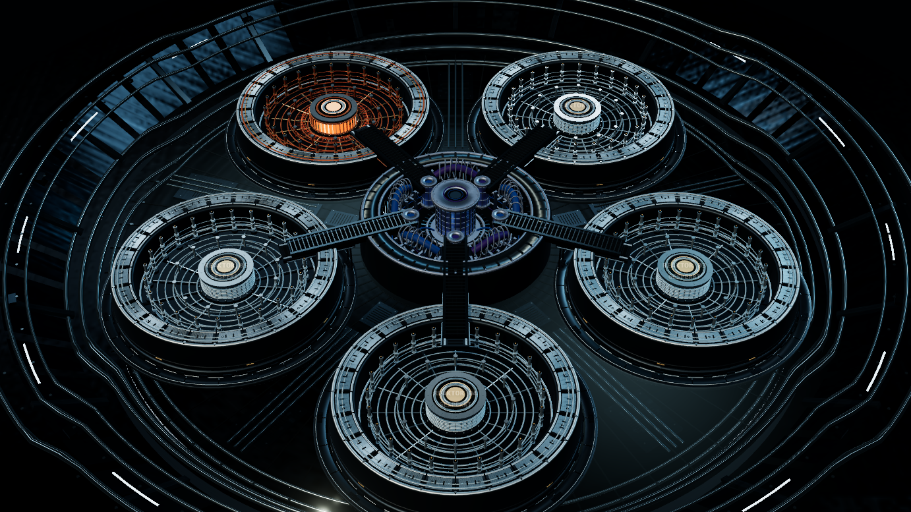
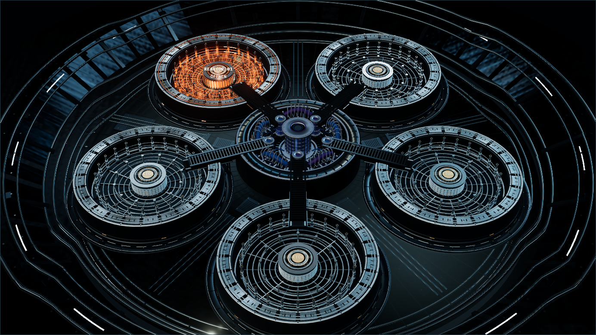

Fünf Reaktoren, ein Schlussaudit
Dieses kleine Schema zeigt die Reihenfolge: Erst Reaktor 01, dann nach jeder Musterabgabe die nächste Kammer. Die vollständige 3D-Demo zeigt zusätzlich Kamerafahrt und Revision.
3D-Reaktoranlage öffnen ↗Reaktoren starten, Perspektiven wechseln, Belege auf dem Ermittlungsboard verknüpfen. Drei bedienbare Demonstrationen zeigen die Oberflächen mit erfundenen Daten – ohne Spielzugang.

TAG 01 · INTERAKTIVE 3D-REAKTORANLAGE ↗Jeder Tag verändert, welche Informationen verfügbar sind und was als Nächstes entschieden werden darf. Der Ausschnitt darunter ist interaktiv, aber vollständig vom Spielserver getrennt.
Die freigegebene 3D-Anlage mit Reaktorzugängen und Kamerafahrt ist in einer isolierten Demo bedienbar. Prüfentscheidungen nutzen erfundene Daten; Spielantworten und Produktionszugänge bleiben außen vor.

Reaktorzugang und Kamerafahrt selbst bedienen ↗Das Designsystem stammt aus der Originalanwendung; der Demoablauf verwendet erfundene Inhalte. Mit einem fiktiven Namen lassen sich Pressearchiv, Segmentwahl und gruppenbezogene Lesefläche ausprobieren.
Unterlage öffnen, Textstelle direkt auf der Seite ziehen, Belegkarte anheften, Karten verbinden und Arbeitsstände ändern. Alle Inhalte sind synthetisch; es gibt keine Verbindung zu echten Spielständen.
Die eingebettete Ansicht ist eine öffentliche Simulation der Board-Bedienung. Sie zeigt keine realen Unterlagen oder Live-Synchronisierung.
Hier lassen sich die Freigabe- und Übergangsregeln vereinfacht durchspielen. Die Oberfläche ist ausdrücklich ein Datenmodell, keine Nachbildung des echten Ermittlungsboards; dieses steht oben als Vollbild-Demo bereit.
Dies ist eine verkürzte Funktionsdemonstration. Die echten Spielregeln und Inhalte bleiben geschützt.
Die Originalanwendung durchsucht freigegebene Unterlagen nach Dateicode, Titel und Inhalt. Hier reagiert ein kleiner neutraler Datensatz genauso auf Suche und Filter.
Diese Liste macht die Status- und Freigaberegeln des Systemlabors sichtbar; sie ist nicht die echte Board-Oberfläche. Das interaktive Ermittlungsboard im Vollbild zeigt die räumliche Leinwand, Dokumentseiten und Belegmarkierung.
Im echten Spiel gelten umfangreichere Regeln. Für diese Demo reichen zwei übernommene Unterlagen und eine Verbindung, damit die Zustandsfolge sichtbar wird.
Die Teilnehmeransicht zeigt den erreichten Archivstatus, nicht die interne Bezeichnung der Leitungsaktion.
Die reale Debriefing-Seite kombiniert eine scrollgesteuerte Archivöffnung mit zeitlichem Bildvergleich, Audio/Transkript, filterbarer Lernlandkarte und einer kapitelgesteuerten Bildergeschichte.
Visuelle Funktionsvorschau ansehenDie Beispiele oben sind isoliert. Die folgenden Mechaniken stammen aus den tatsächlichen Anwendungen und beschreiben ihre Eingaben, Prüfungen und Ausgaben.
Eine Hostansicht steuert den gemeinsamen Fragenablauf. Teilnehmende antworten auf Mobilgeräten; Antworten und Auswertung werden synchronisiert.
Fünf Technologiereaktoren bilden getrennte Fälle mit Belegen und Entwürfen. Abgaben erhalten einen Prüfstatus; eine Revision öffnet den betroffenen Reaktor erneut. Der Schlussaudit bleibt bis zum Abschluss der fünf Reaktoren gesperrt.
Sechs Ermittlungswege erhalten unterschiedliche Perspektiven und Unterlagen. Einzelne Funde werden in einem koordinierten Ablauf zusammengeführt, statt dass alle dieselbe Sicht sehen.
Freigegebene Unterlagen sind nach Titel, Dateicode und Inhalt durchsuchbar. Das Board speichert Einträge, Arbeitsstatus, Verknüpfungen und ein Änderungsprotokoll; eigene Aktionen können rückgängig gemacht werden. Die Leitung beobachtet den Stand ohne sichtbaren Auftritt im Teilnehmerboard.
Nach geschützter Übergabe verbindet die Auswertung Auflösung, Audio mit Transkript, filterbare Lernlandkarte, Vertiefung und eine kapitelgesteuerte Bildergeschichte. Bewegungen werden bei reduzierter Bewegung abgeschaltet.
Diese Modelle zeigen echte Regelprinzipien mit erfundenen Daten. Sie sind bewusst kleiner als die Originalanwendungen.
Dieses kleine Schema zeigt die Reihenfolge: Erst Reaktor 01, dann nach jeder Musterabgabe die nächste Kammer. Die vollständige 3D-Demo zeigt zusätzlich Kamerafahrt und Revision.
3D-Reaktoranlage öffnen ↗Anfänglich sind A, B, C, D und V wählbar; E wird erst später zugänglich. Eine zeitliche Sperre und eine Intervention können den nächsten Schritt blockieren.
Die Leitung startet einen Ereigniszustand; das Smartphone erhält bei erlaubten Benachrichtigungen einen Push, eine offene App kann den Anruf direkt zeigen.
Nur Statussimulation: kein echter Anruf, keine Audioausgabe und keine Garantie für Betriebssystem-Push ohne Gerätefreigabe.Die Archivszene nutzt einen echten Hintergrund und demonstriert die Öffnungsbewegung. Lernlandkarte und Bildergeschichte sind bewusst verkürzte, spoilerfreie Strukturproben – keine Kopie der vollständigen Originalansichten.
Die Steinschranke gibt beim Scrollen den Raum und die nächste Ansicht frei.
Vier neutrale Musterknoten demonstrieren Auswahl und Tagesfilter. Das Original zeigt ein wesentlich größeres verknüpftes Lernnetz mit zusätzlichen Filtern; dessen vollständige Struktur ist hier nicht nachgebildet.
Drei neutrale Textschritte zeigen nur die Navigation. Die Original-Bildergeschichte umfasst wesentlich mehr Bildpositionen und wird hier weder bildlich noch inhaltlich wiedergegeben.
Nicht veröffentlicht werden die tatsächliche Auflösung, Personenporträts, Audiotitel, Spielunterlagen oder Zugangsdaten.
Das Projekt ist kein Satz lose verlinkter Seiten. Die Anwendungen koppeln Rollen, Phasen und Freigaben; die Oberfläche zeigt jeweils nur den passenden Ausschnitt.
Recherche, Entscheidung, Mediennutzung, Belegnotiz oder Board-Verknüpfung.
Rollen- und Phasenstand entscheiden, welche Eingabe zulässig ist und welche Ansicht folgt.
Desktop, Smartphone und Leitungsansicht erhalten den für sie relevanten aktualisierten Stand.
Archivknoten und Debriefing öffnen erst zum vorgesehenen Zeitpunkt.
Eine gültige Sitzung allein genügt nicht: Die Suche bleibt bis zur freigegebenen Phase gesperrt.
Übersprungene Phasen und konkurrierende Board-Revisionen werden zurückgewiesen, statt einen falschen Stand zu speichern.
Tag 2 trennt manuelle Intervention und servergesteuerte Wartezeit; die Oberfläche zeigt den jeweiligen Grund.
Ausgelöst, klingelnd, angenommen oder abgelehnt werden getrennt erfasst. Push und Ton hängen zusätzlich von Gerätefreigaben ab.
Dieses öffentliche Systemprofil ist eine eigenständige statische Website. Die Demonstrationen simulieren das Prinzip mit anonymen Beispieldaten und speichern nichts auf dem Produktionsserver. Die beschriebenen Originalfunktionen sind getrennt davon in den Spielanwendungen implementiert.